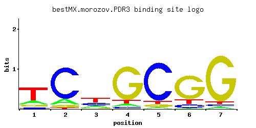

PDR3
YBL005W, TPE2, AMY2
Transcriptional activator of the pleiotropic drug resistance network, regulates expression of ATP-binding cassette (ABC) transporters through binding to cis-acting sites known as PDREs (PDR responsive elements)
Best-performing DNA-binding model.

View and copy the recommended matrices ↘
A | 0.187 0.126 0.196 0.060 0.034 0.024 0.036 C | 0.087 0.791 0.280 0.053 0.842 0.118 0.040 G | 0.098 0.060 0.072 0.818 0.062 0.733 0.884 T | 0.628 0.023 0.451 0.069 0.062 0.126 0.040
A | 18 12 19 6 3 2 3 C | 8 79 28 5 84 11 4 G | 9 6 7 81 6 73 88 T | 62 2 45 6 6 12 4
A | -0.54 -0.93 -0.49 -1.67 -2.24 -2.59 -2.18 C | -0.73 1.48 0.44 -1.22 1.54 -0.42 -1.50 G | -0.61 -1.10 -0.92 1.51 -1.07 1.40 1.59 T | 0.67 -2.63 0.34 -1.53 -1.64 -0.93 -2.08
Alternative candidate matrices 8
Historical matrix candidates from the original ScerTF database. Expand a source to inspect its original logo, scores, and matrix values.
PDR3Foat et. al.P = 1View matrix ↘
PDR3_AFordyce et. al.P = 0.5735View matrix ↘
PDR3_BFordyce et. al.P = 0.1947View matrix ↘
PDR3_CFordyce et. al.P = 0.5358View matrix ↘
PDR3Harbison et. al.P = 0.08976View matrix ↘
PDR3Macisaac et. alP = 0.08976View matrix ↘
PDR3Pachkov et alP = 0.03168View matrix ↘
PDR3Zhu J and MQ ZhangP = 0.08976View matrix ↘
Gene-level annotations and interactions.
Genes bound in ChIP-chip experiments 72 genes
YAR050W, YBL005W, YBL006C, YBL059W, YBR080C, YBR127C, YBR214W, YCR020C-A, YCR032W, YDL027C, YDL091C, YDR048C, YDR091C, YDR092W, YDR142C, YDR289C, YDR319C, YDR415C, YDR416W, YDR446W, YDR468C, YDR469W, YGL004C, YGL059W, YGL066W, YGL113W, YGR110W, YGR166W, YGR218W, YHR064C, YIL068C, YJL095W, YJR007W, YJR054W, YJR069C, YJR071W, YJR096W, YJR132W, YKL077W, YKL169C, YKR105C, YKR106W, YLR239C, YLR240W, YLR343W, YLR456W, YML093W, YML095C-A, YML096W, YML097C, YMR094W, YMR126C, YMR193W, YMR257C, YMR258C, YMR290W-A, YNL168C, YNL258C, YNR007C, YNR008W, YOL003C, YOL083W, YOR148C, YOR205C, YOR206W, YOR233W, YOR280C, YOR282W, YOR287C, YOR322C, YOR339C, YPR087W
Genes affected by TF deletion 79 genes
YJR054W, YML117W-A, YDL100C, YGL039W, YGL009C, YJL053W, YLR090W, YMR220W, YPL053C, YDR207C, YNL051W, YMR198W, YHR145C, YPL016W, YDR130C, YGL262W, YMR134W, YOL104C, YNR065C, YGL075C, YDR099W, YLR341W, YOR320C, YMR020W, YOR075W, YGL239C, YGL180W, YOR230W, YJR148W, YEL051W, YGL048C, YGR161C-D, YLR035C-A, YLR099C, YLR101C, YOR074C, YOR046C, YPL054W, YCR086W, YHR093W, YJR155W, YLL038C, YLR348C, YMR145C, YNR002C, YLR345W, YLR349W, YCL025C, YJL156C, YMR321C, YBR018C, YDR414C, YJR100C, YJR038C, YOL031C, YOR209C, YPL191C, YGL027C, YBR049C, YBR051W, YCL066W, YGL188C, YIL097W, YIL099W, YNL100W, YKL120W, YBR146W, YDR110W, YDR484W, YKL001C, YNL191W, YBL006C, YER100W, YJR006W, YJR107W, YHR135C, YEL010W, YLL025W, YCL006C
Genes supported by both experiments 2 genes
YBL006C, YJR054W
Predicted TF–TF partners 7 genes
CIN5, GSM1, MIG1, PDR8, RGT1, SUT1, YER184C